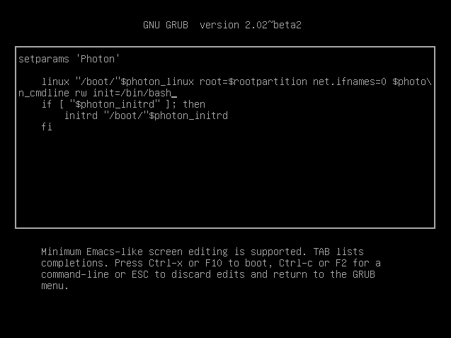
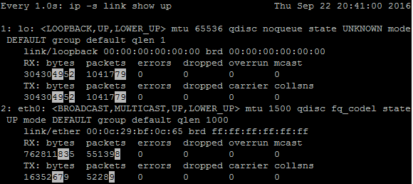

Photon OS Linux Troubleshooting Guide
- Introduction
- Solutions to Common Problems
- Common Troubleshooting Tools on Photon OS
- Systemd
- Networking
- File System
- Packages
- Kernel Problems and Boot and Login Problems
- Performance Issues
Introduction
This guide describes the fundamentals of troubleshooting problems on Photon OS. An open-source minimalist Linux operating system from VMware, Photon OS is optimized for cloud computing platforms, VMware vSphere deployments, virtual appliances, and applications native to the cloud.
This guide covers the basics of troubleshooting systemd, packages, network interfaces, services such as SSH and Sendmail, the file system, and the Linux kernel. The guide includes a quick tour of the tools that you can use for troubleshooting and provides examples along the way. The guide also demonstrates how to access the system's log files.
For information on how to install and manage Photon OS, see the Photon OS Administration Guide.
Systemd and TDNF
Two characteristics of Photon OS stand out: It manages services with systemd, and it manages packages with its own open source, yum-compatible package manager called tdnf, for Tiny DNF.
By using systemd, Photon OS adopts a contemporary Linux standard to bootstrap the user space and concurrently start services--an architecture that differs from traditional Linux systems such as SUSE Linux Enterprise Server 11.
A traditional Linux system contains an initialization system called SysVinit. With SLES 11, for instance, SysVinit-style init programs control how the system starts up and shuts down. Init implements system runlevels. A SysVinit runlevel defines a state in which a process or service runs. In contrast to a SysVinit system, systemd defines no such runlevels. Instead, systemd uses a dependency tree of targets to determine which services to start when.
Because the systemd commands differ from those of an init.d-based Linux system, a section later in this guide illustrates how to troubleshoot by using systemctl commands instead of init.d-style commands.
Tdnf keeps the operating system as small as possible while preserving yum's robust package-management capabilities. On Photon OS, tdnf is the default package manager for installing new packages. Since troubleshooting with tdnf differs from using yum, a later section of this guide describes how to solve problems with packages and repositories by using tdnf commands.
The Root Account and the sudo and su Commands
This guide assumes that you are logged in to Photon OS with the root account and running commands as root. The sudo program comes with the full version of Photon OS. On the minimal version, you must install sudo with tdnf if you want to use it. As an alternative to installing sudo on the minimal version, you can switch users as needed with the su command to run commands that require root privileges.
Checking the Version and Build Number
To check the version and build number of Photon OS, concatenate /etc/photon-release. Example:
cat /etc/photon-release
VMware Photon Linux 1.0
PHOTON_BUILD_NUMBER=a6f0f63
The build number in the results maps to the commit number on the VMware Photon OS GitHub commits page.
General Best Practices
When troubleshooting, you should follow some general best practices:
Take a snapshot. Before you do anything to a virtual machine running Photon OS, take a snapshot of the VM so that you can restore it if need be.
Make a backup copy. Before you change a configuration file, make a copy of the original in case you need to restore it later; example:
cp /etc/tdnf/tdnf.conf /etc/tdnf/tdnf.conf.origCollect logs. Save the log files associated with a Photon OS problem; you or others might need them later. Include not only the log files on the guest but also the
vmware.logfile on the host;vmware.logis in the host's directory that contains the VM.Know what's in your toolbox. Glance at the man page for a tool before you use it so that you know what your options are. The options can help focus the command's output on the problem you're trying to solve.
Understand the system. The more you know about the operating system and how it works, the better you can troubleshoot.
Logs on Photon OS
On Photon OS, all the system logs except the installation log and the cloud-init log are written into the systemd journal. The journalctl command queries the contents of the systemd journal.
The installation log files and the cloud-init log files reside in /var/log. If Photon OS is running on a virtual machine in a VMware hypervisor, the log file for the VMware tools (vmware-vmsvc.log) also resides in /var/log.
Troubleshooting Progression
If you encounter a problem running an application or appliance on Photon OS and you suspect it involves the operating system, you can troubleshoot by proceeding as follows.
First, check the services running on Photon OS:
systemctl status
Second, check your application's log files for clues. (For VMware applications, see Location of Log Files for VMware Products.)
Third, check the service controller or service monitor for your application or appliance.
Fourth, check the network interfaces and other aspects of the network service with systemd-network commands.
Fifth, check the operating system's log files:
journalctl
Next, run the following commands to view all services according to the order in which they were started:
systemd-analyze critical-chain
Finally, if the previous steps have not revealed enough information to isolate the problem, turn to the troubleshooting tool that you think is most likely to help with the issue at hand. You could, for example, use strace to identify the location of the failure. See the list of troubleshooting tools on Photon OS in a later section.
Solutions to Common Problems
This section describes solutions to problems that you're likely to encounter.
Resetting a Lost Root Password
Here's how to reset a lost root password.
First, restart the Photon OS machine or the virtual machine running Photon OS. When the Photon OS splash screen appears as it restarts, type the letter e to go to the GNU GRUB edit menu. Be quick about it: Because Photon OS reboots so quickly, you won't have much time to type e. Remember that in vSphere and Workstation, you might have to give the console focus by clicking in its window before it will register input from the keyboard.
Second, in the GNU GRUB edit menu, go to the end of the line that starts with linux, add a space, and then add the following code exactly as it appears below:
rw init=/bin/bash
After you add this code, the GNU GRUB edit menu should look exactly like this:

Now type F10.
At the command prompt, type passwd and then type (and re-enter) a new root password that conforms to the password complexity rules of Photon OS. Remember the password.
Next, type the following command:
umount /
Finally, type the following command. You must include the -f option to force a reboot; otherwise, the kernel enters a state of panic.
reboot -f
This sequence of commands should look like this:

After the Photon OS machine reboots, log in with the new root password.
Fixing Permissions on Network Config Files
If you, as the root user, create a new network configuration file on Photon OS, the network service might be unable to process it until you set the file's mode bits to 644.
If you query the journal with journalctl -u systemd-networkd, you might see the following error message along with an indication that the network service did not start:
could not load configuration files. permission denied
The permissions on the network files are the likely cause of this problem. Without the correct permissions, networkd-systemd cannot parse and apply the settings, and the network configuration that you created will not be loaded.
After you create a network configuration file with a .network extension, you must run the chmod command to set the new file's mode bits to 644. Example:
chmod 644 10-static-en.network
For Photon OS to apply the new configuration, you must restart the systemd-networkd service by running the following command:
systemctl restart systemd-networkd
Permitting Root Login with SSH
The full version of Photon OS prevents root login with SSH by default. To permit root login over SSH, open /etc/ssh/sshd_config with the vim text editor and set PermitRootLogin to yes.
Vim is the default text editor available in both the full and minimal versions of Photon OS. (Nano is also in the full version.) After you modify the SSH daemon's configuration file, you must restart the sshd daemon for the changes to take effect. Example:
vim /etc/ssh/sshd_config
# override default of no subsystems
Subsystem sftp /usr/libexec/sftp-server
# Example of overriding settings on a per-user basis
#Match User anoncvs
# X11Forwarding no
# AllowTcpForwarding no
# PermitTTY no
# ForceCommand cvs server
PermitRootLogin yes
UsePAM yes
Save your changes in vim and then restart the sshd daemon:
systemctl restart sshd
You can then connect to the Photon OS machine with the root account over SSH:
steve@ubuntu:~$ ssh root@198.51.100.131
Fixing Sendmail If Installed Before an FQDN Was Set
If Sendmail is behaving improperly or if it hangs during installation, it is likely that an FQDN is not set. Take the following corrective action.
First, set an FQDN for your Photon OS machine.
Then, run the following commands in the order below:
echo $(hostname -f) > /etc/mail/local-host-names
cat > /etc/mail/aliases << "EOF"
postmaster: root
MAILER-DAEMON: root
EOF
/bin/newaliases
cd /etc/mail
m4 m4/cf.m4 sendmail.mc > sendmail.cf
chmod 700 /var/spool/clientmqueue
chown smmsp:smmsp /var/spool/clientmqueue
Common Troubleshooting Tools on Photon OS
This section describes tools that can help troubleshoot problems. These tools are installed by default on the full version of Photon OS. On the minimal version of Photon OS, you may have to install a tool before you can use it.
There is a manual, or man page, on Photon OS for all the tools covered in this section. The man pages provide more information about each tool's commands, options, and output. To view a tool's man page, on the Photon OS command line, type man and then the name of the tool. Example:
man strace
Some of the examples in this section are marked as abridged with ellipsis (...).
Top
Photon OS includes the Top tool to monitor system resources, workloads, and performance. It can unmask problems caused by processes or applications overconsuming CPUs, time, or RAM.
To view a textual display of resource consumption, run the top command:
top
In Top, you can kill a runaway or stalled process by typing k followed by its process ID (PID).

If the percent of CPU utilization is consistently high with little idle time, there might be a runaway process overconsuming CPUs. Restarting the service might solve the problem.
A handy trick while troubleshooting an unknown issue is to run Top in the background by using batch mode to write its output to a file in order to collect data about performance:
top d 120 b >> top120second.output
For a list of options that filter top output and other information, see the man page for Top.
ps
The ps tool shows the processes running on the machine. The ps tool derives flexibility and power from its options, all of which are covered in the tool's Photon OS man page:
man ps
Here are several popular invocations of ps for troubleshooting.
Show processes by user:
ps aux
Show processes and child processes by user:
ps auxf
Show processes containing the string ssh:
ps aux | grep ssh
Show processes and the command and options with which they were started:
ps auxww
Example abridged output:
ps auxww
USER PID %CPU %MEM VSZ RSS TTY STAT START TIME COMMAND
root 1 0.0 0.9 32724 3300 ? Ss 07:51 0:32 /lib/systemd/systemd --switched-root --system --deserialize 22
netstat
The netstat command can identify bottlenecks causing performance issues. It lists network connections, listening sockets, port information, and interface statistics for different protocols. Examples:
netstat --statistics
netstat --listening
find
The find command can be a useful starting point to troubleshoot a Photon OS machine that has stopped working. The following command, for example, lists the files in the root directory that have changed in the past day:
find / -mtime -1
See the find manual. Take note of the security considerations listed in the find manual if you are using find to troubleshoot an appliance running on Photon OS.
Locate
The locate command is a fast way to find files and directories when all you have is a keyword. Similar to find and part of the same findutils package preinstalled on the full version of Photon OS by default, the locate command finds file names in the file names database. Before you can use locate accurately, you should update its database:
updatedb
Then you can run locate to quickly find a file, such as any file name containing .network, which can be helpful to see all the system's .network configuration files; abridged example:
locate .network
/etc/dbus-1/system.d/org.freedesktop.network1.conf
/etc/systemd/network/10-dhcp-en.network
/usr/lib/systemd/network/80-container-host0.network
/usr/lib/systemd/network/80-container-ve.network
/usr/lib/systemd/system/busnames.target.wants/org.freedesktop.network1.busname
/usr/lib/systemd/system/dbus-org.freedesktop.network1.service
/usr/lib/systemd/system/org.freedesktop.network1.busnname
/usr/share/dbus-1/system-services/org.freedesktop.network1.service
The locate command is also a quick way to see whether a troubleshooting tool is installed on Photon OS. Examples:
locate strace
/usr/bin/strace
/usr/bin/strace-graph
/usr/bin/strace-log-merge
/usr/share/man/man1/strace.1.gz
/usr/share/vim/vim74/syntax/strace.vim
locate traceroute
The strace tool is there but traceroute is not. You can, however, quickly install traceroute from the Photon OS repository:
tdnf install traceroute
df
The df command reports the disk space available on the file system. Because running out of disk space can lead an application to fail, a quick check of the available space makes sense as an early troubleshooting step:
df -h
The -h option prints out the available and used space in human-readable sizes. After checking the space, you should also check the number of available inodes. Too few available inodes can lead to difficult-to-diagnose problems:
df -i
md5sum and sha256sum
md5sum calculates 128-bit MD5 hashes--a message digest, or digital signature, of a file--to uniquely identify a file and verify its integrity after file transfers, downloads, or disk errors when the security of the file is not in question. Photon OS also includes sha256sum, which is the preferred method of calculating the authenticity of a file to prevent tampering when security is a concern. Photon OS also includes shasum, sha1sum, sha384sum, and sha512sum. See the man pages for md3sum, sha256sum, and the other SHA utilities.
md5sum can help troubleshooting installation issues by verifying that the version of Photon OS being installed matches the version on the Bintray download page. If, for instance, bytes were dropped during the download, the checksums will not match. Try downloading it again.
strace
The strace utility follows system calls and signals as they are executed so that you can see what an application, command, or process is doing. strace can trace failed commands, identify where a process obtains its configuration, monitor file activity, and find the location of a crash.
By tracing system calls, strace can help troubleshoot a broad range of problems, including issues with input-output, memory, interprocess communication, network usage, and application performance.
For troubleshooting a problem that gives off few or no clues, the following command displays every system call:
strace ls -al
With strace commands, you can route the output to a file to make it easier to analyze:
strace -o output.txt ls -al
strace can reveal the files that an application is trying to open with the -eopen option. This combination can help troubleshoot an application that is failing because it is missing files or being denied access to a file it needs. If, for example, you see "No such file or directory" in the results of strace -eopen, something might be wrong:
strace -eopen sshd
open("/usr/lib/x86_64/libpam.so.0", O_RDONLY|O_CLOEXEC) = -1 ENOENT (No such file or directory)
open("/usr/lib/libpam.so.0", O_RDONLY|O_CLOEXEC) = 3
In the results above, it's OK that the first file is missing because it is found in the next line. In other cases, the application might be unable to open one of its configuration files or reading the wrong one. If the results say "permission denied" for one of the files, check the permissions of the file with ls -l or stat.
When troubleshooting with strace, you can include the process ID in its commands. Here's an example of how to find a process ID:
ps -ef | grep apache
And you can then use strace to examine the file a process is working with:
strace -e trace=file -p 1719
A similar command can trace network traffic:
strace -p 812 -e trace=network
If an application is crashing, use strace to trace the application and then analyze what happens right before the application crashes.
You can also trace the child processes that an application spawns with the fork system call, and you can do so with systemctl commands that start a process to identify why an application crashes immediately or fails to start:
strace -f -o output.txt systemctl start httpd
Here's another example. If journalctl is showing that networkd is failing, you can run strace to help determine why:
strace -o output.txt systemctl restart systemd-networkd
And then grep inside the results for something, such as exit or error:
grep exit output.txt
Maybe the results indicate systemd-resolved is going wrong, and you can then strace it, too:
strace -f -o output.txt systemctl restart systemd-resolved
file
The file command determines the file type, which can help troubleshoot problems when an application mistakes one type of file for another, leading it to misbehave. Example:
file /usr/sbin/sshd
/usr/sbin/sshd: ELF 64-bit LSB shared object, x86-64, version 1 (SYSV), dynamically linked, interpreter /lib64/ld-linux-x86-64.so.2, for GNU/Linux 2.6.32, stripped
stat
The stat command can help troubleshoot problems with files or the file system by showing the last date it was modified and other information. Example:
stat /dev/sda1
File: '/dev/sda1'
Size: 0 Blocks: 0 IO Block: 4096 block special file
Device: 6h/6d Inode: 6614 Links: 1 Device type: 8,1
Access: (0660/brw-rw----) Uid: ( 0/ root) Gid: ( 8/ disk)
Access: 2016-09-02 12:23:56.135999936 +0000
Modify: 2016-09-02 12:23:52.879999981 +0000
Change: 2016-09-02 12:23:52.879999981 +0000
Birth: -
On Photon OS, stat is handy to show permissions for a file or directory in both their absolute octal notation and their read-write-execute abbreviation; truncated example:
chmod 777 tester.md
stat tester.md
File: 'tester.md'
Size: 0 Blocks: 0 IO Block: 4096 regular empty file
Device: 801h/2049d Inode: 316385 Links: 1
Access: (0777/-rwxrwxrwx) Uid: ( 0/ root) Gid: ( 0/ root)
watch
The watch utility runs a command at regular intervals so you can observe how its output changes over time. watch can help dynamically monitor network links, routes, and other information when you are troubleshooting networking or performance issues. Examples:
watch -n0 --differences ss
watch -n1 --differences ip route
Here's another example with a screenshot of the command's output. This command monitors the traffic on your network links. The highlighted numbers are updated every second so you can see the traffic fluctuating:
watch -n1 --differences ip -s link show up

vmstat and fdisk
The vmstat tool displays statistics about virtual memory, processes, block input-output, disks, and CPU activity. This tool can help diagnose performance problems, especially system bottlenecks.
Its output on a Photon OS virtual machine running in VMware Workstation 12 Pro without a heavy load looks like this:
vmstat
procs -----------memory---------- ---swap-- -----io---- -system-- ------cpu-----
r b swpd free buff cache si so bi bo in cs us sy id wa st
0 0 0 5980 72084 172488 0 0 27 44 106 294 1 0 98 1 0
What do all these codes mean? They are explained in the vmstat man page.
If r, the number of runnable processes, is higher than 10, the machine is under stress; consider intervening to reduce the number of processes or to distribute some of the processes to other machines. In other words, the machine has a bottleneck in executing processes.
If cs, the number of context switches per second, is really high, there may be too many jobs running on the machine.
If in, the number of interrupts per second, is relatively high, there might be a bottleneck for network or disk IO.
You can investigate disk IO further by using vmstat's -d option to report disk statistics; abridged example on a machine with little load:
vmstat -d
disk- ------------reads------------ ------------writes----------- -----IO------
total merged sectors ms total merged sectors ms cur sec
ram0 0 0 0 0 0 0 0 0 0 0
ram1 0 0 0 0 0 0 0 0 0 0
loop0 0 0 0 0 0 0 0 0 0 0
loop1 0 0 0 0 0 0 0 0 0 0
sr0 0 0 0 0 0 0 0 0 0 0
sda 22744 676 470604 12908 72888 24949 805224 127692 0 130
The -D option summarizes disk statistics:
vmstat -D
26 disks
2 partitions
22744 total reads
676 merged reads
470604 read sectors
12908 milli reading
73040 writes
25001 merged writes
806872 written sectors
127808 milli writing
0 inprogress IO
130 milli spent IO
You can also get statistics about a partition. First, run the fdisk -l command to list the machine's devices. Then run vmstat -p with the name of a device to view its stats:
fdisk -l
Disk /dev/ram0: 4 MiB, 4194304 bytes, 8192 sectors
Units: sectors of 1 * 512 = 512 bytes
Sector size (logical/physical): 512 bytes / 4096 bytes
I/O size (minimum/optimal): 4096 bytes / 4096 bytes
...
Device Start End Sectors Size Type
/dev/sda1 2048 16771071 16769024 8G Linux filesystem
/dev/sda2 16771072 16777182 6111 3M BIOS boot
vmstat -p /dev/sda1
sda1 reads read sectors writes requested writes
22579 473306 78510 866088
See the vmstat man page for more options.
lsof
The lsof command lists open files. And this tool's definition of an open file is quite broad--directories, libraries, streams, domain sockets, and Internet sockets are all considered files, making lsof broadly applicable as a mid-level troubleshooting tool to identify the files a process is using. Because a Linux system like Photon OS uses files to do its work, you can run lsof as root to see how the system is using them and to see how an application works.
If, for example, you cannot unmount a disk because it is in use, you can run lsof to identify the files on the disk that are being used. Here's an example showing what's using the root directory:
lsof /root
COMMAND PID USER FD TYPE DEVICE SIZE/OFF NODE NAME
bash 879 root cwd DIR 8,1 4096 262159 /root
bash 1265 root cwd DIR 8,1 4096 262159 /root
sftp-serv 1326 root cwd DIR 8,1 4096 262159 /root
gdb 1351 root cwd DIR 8,1 4096 262159 /root
bash 1395 root cwd DIR 8,1 4096 262159 /root
lsof 1730 root cwd DIR 8,1 4096 262159 /root
You can do the same with an application or virtual appliance by running lsof with the user name or process ID of the app. Here's an example that lists the open files used by the Apache HTTP Server:
lsof -u apache
Running the command with the -i option lists all the open network and Internet files, which can help troubleshoot network problems:
lsof -i
See the Unix socket addresses of a user like zookeeper:
lsof -u zookeeper -U
And here's an example that shows the processes running on Ports 1 through 80:
lsof -i TCP:1-80
COMMAND PID USER FD TYPE DEVICE SIZE/OFF NODE NAME
httpd 403 root 3u IPv6 10733 0t0 TCP *:http (LISTEN)
httpd 407 apache 3u IPv6 10733 0t0 TCP *:http (LISTEN)
httpd 408 apache 3u IPv6 10733 0t0 TCP *:http (LISTEN)
httpd 409 apache 3u IPv6 10733 0t0 TCP *:http (LISTEN)
sshd 820 root 3u IPv4 11336 0t0 TCP *:ssh (LISTEN)
sshd 820 root 4u IPv6 11343 0t0 TCP *:ssh (LISTEN)
sshd 1258 root 3u IPv4 48040 0t0 TCP 198.51.100.143:ssh->198.51.100.1:49759 (ESTABLISHED)
sshd 1319 root 3u IPv4 50866 0t0 TCP 198.51.100.143:ssh->198.51.100.1:51054 (ESTABLISHED)
sshd 1388 root 3u IPv4 56438 0t0 TCP 198.51.100.143:ssh->198.51.100.1:60335 (ESTABLISHED)
You can also inspect the files opened by a process ID. Here's a truncated example that queries the files open by the systemd network service:
lsof -p 1917
COMMAND PID USER FD TYPE DEVICE SIZE/OFF NODE NAME
systemd-n 1917 systemd-network cwd DIR 8,1 4096 2 /
systemd-n 1917 systemd-network txt REG 8,1 887896 272389 /usr/lib/systemd/systemd-networkd
systemd-n 1917 systemd-network mem REG 8,1 270680 262267 /usr/lib/libnss_files-2.22.so
systemd-n 1917 systemd-network 0r CHR 1,3 0t0 5959 /dev/null
systemd-n 1917 systemd-network 1u unix 0x0000000000000000 0t0 45734 type=STREAM
systemd-n 1917 systemd-network 3u netlink 0t0 6867 ROUTE
systemd-n 1917 systemd-network 4u unix 0x0000000000000000 0t0 45744 type=DGRAM
systemd-n 1917 systemd-network 9u netlink 0t0 45754 KOBJECT_UEVENT
systemd-n 1917 systemd-network 12u a_inode 0,11 0 5955 [timerfd]
systemd-n 1917 systemd-network 13u IPv4 104292 0t0 UDP 198.51.100.143:bootpc
fuser
The fuser command identifies the process IDs of processes using files or sockets. The term process is, in this case, synonymous with user. To identify the process ID of a process using a socket, run fuser with its namespace option and specify tcp or udp and the name of the process or port. Examples:
fuser -n tcp ssh
ssh/tcp: 940 1308
fuser -n tcp http
http/tcp: 592 594 595 596
fuser -n tcp 80
80/tcp: 592 594 595 596
ldd
By revealing the shared libraries that a program depends on, ldd can help troubleshoot an application that is missing a library or finding the wrong one.
If, for example, you find output that says "file not found," check the path to the library.
ldd /usr/sbin/sshd
linux-vdso.so.1 (0x00007ffc0e3e3000)
libpam.so.0 => (file not found)
libcrypto.so.1.0.0 => /usr/lib/libcrypto.so.1.0.0 (0x00007f624e570000)
You can also use the objdump command to show dependencies for a program's object files; example:
objdump -p /usr/sbin/sshd | grep NEEDED
gdb
The gdb tool is the GNU debugger. It lets you peer inside a program while it executes or when it crashes so that you can catch bugs on the fly. The gdb tool is typically used to debug programs written in C and C++. On Photon OS, gdb can help you determine why an application crashed. See the man page for gdb for instructions on how to run it. For an extensive example on how to use gdb to troubleshoot Photon OS running on a VM when you cannot login to Photon OS, see the section on troubleshooting boot and logon problems.
Other Troubleshooting Tools Installed by Default
The following troubleshooting tools are included in the full version of Photon OS:
grepsearches files for patterns.pingtests network connectivity.stringsdisplays the characters in a file to identify its contents.lsmodlists loaded modules.ipcsshows data about the inter-process communication (IPC) resources to which a process has read access--typically, shared memory segments, message queues, and semaphore arrays.nmlists symbols from object files.diffcompares files side by side. Useful to compare two configuration files when one version works and the other doesn't.
Installing More Tools from Repositories
You can install several troubleshooting tools from the Photon OS repositories by using the default package management system, tdnf.
If a tool you need is not installed, the first thing you should do is search the repositories to see whether it's available. The traceroute tool, for example, is not installed by default. Here's how to search for it in the repositories:
tdnf search traceroute
traceroute : Traces the route taken by packets over an IPv4/IPv6 network
The results of the above command show that traceroute exists in the repository. You install it with tdnf:
tdnf install traceroute
Additional tools are not installed by default but are in the repository for instant installation with tdnf:
net-tools: networking tools.ltrace: tool for intercepting and recording dynamic library calls. It can identify the function an application was calling when it crashed, making it useful for debugging.nfs-utils: client tools for the kernel Network File System, or NFS, including showmount; installed by default in the full version of Photon OS but not in the minimal version.pcstat: A tool that inspects which pages of a file or files are being cached by the Linux kernel.sysstatandsar: Utilities to monitor system performance and usage activity. Installing sysstat also installs sar.systemtapandcrash: The systemtap utility is a programmable instrumentation system for diagnosing problems of performance or function. Installing systemtap also installs crash, which is a kernel crash analysis utility for live systems and dump files.dstat: versatile tool for viewing and analyzing statistics about system resources.
The dstat tool, for example, can help troubleshoot system performance. The tool shows a live, running list of statistics about system resources:
dstat
You did not select any stats, using -cdngy by default.
----total-cpu-usage---- -dsk/total- -net/total- ---paging-- ---system--
usr sys idl wai hiq siq| read writ| recv send| in out | int csw
1 0 98 1 0 0|4036B 42k| 0 0 | 0 0 | 95 276
1 0 98 1 0 0| 0 64k| 60B 940B| 0 0 | 142 320
1 1 98 0 0 0| 0 52k| 60B 476B| 0 0 | 149 385
Linux Troubleshooting Tools Not on Photon OS
The following Linux troubleshoot tools are neither installed on Photon OS by default nor available in the Photon OS repositories:
- iostat
- telnet (use SSH instead)
- Iprm
- hdparm
- syslog (use journalctl instead)
- ddd
- ksysmoops
- xev
- GUI tools (because Photon OS has no GUI)
Systemd
Photon OS manages services with systemd and its command-line utility for inspecting and controlling the system, systemctl, not the deprecated commands of init.d. For example, instead of running the /etc/init.d/ssh script to stop and start the OpenSSH server on a init.d-based Linux system, you control the service by running the following systemctl commands on Photon OS:
systemctl stop sshd
systemctl start sshd
For an overview of systemd, see systemd System and Service Manager and the man page for systemd. The systemd man pages are listed at https://www.freedesktop.org/software/systemd/man/.
Viewing Services
To view a description of all the active, loaded units, execute the systemctl command without any options or arguments:
systemctl
To see all the loaded, active, and inactive units and their description, run this command:
systemctl --all
To see all the unit files and their current status but no description, run this command:
systemctl list-unit-files
The grep command filters the services by a search term, a helpful tactic to recall the exact name of a unit file without looking through a long list of names. Example:
systemctl list-unit-files | grep network
org.freedesktop.network1.busname static
dbus-org.freedesktop.network1.service enabled
systemd-networkd-wait-online.service enabled
systemd-networkd.service enabled
systemd-networkd.socket enabled
network-online.target static
network-pre.target static
network.target
Using Systemd Commands Instead of Init.d Commands
Basic system administration commands on Photon OS differ from those on operating systems that use SysVinit. Since Photon OS uses systemd instead of SysVinit, you must use systemd commands to manage services.
For example, to list all the services that you can manage on Photon OS, you run the following command instead of ls /etc/rc.d/init.d/:
systemctl list-unit-files --type=service
Similarly, to check whether the sshd service is enabled, on Photon OS you run the following command instead of chkconfig sshd:
systemctl is-enabled sshd
The chkconfig --list command that shows which services are enabled for which runlevel on a SysVinit computer becomes substantially different on Photon OS because there are no runlevels, only targets:
ls /etc/systemd/system/*.wants
You can also display similar information with the following command:
systemctl list-unit-files --type=service
Here is a list of some of the systemd commands that take the place of SysVinit commands on Photon OS:
USE THIS SYSTEMD COMMAND INSTEAD OF THIS SYSVINIT COMMAND
systemctl start sshd service sshd start
systemctl stop sshd service sshd stop
systemctl restart sshd service sshd restart
systemctl reload sshd service sshd reload
systemctl condrestart sshd service sshd condrestart
systemctl status sshd service sshd status
systemctl enable sshd chkconfig sshd on
systemctl disable sshd chkconfig sshd off
systemctl daemon-reload chkconfig sshd --add
Analyzing System Logs with journalctl
The journalctl tool queries the contents of the systemd journal. On Photon OS, all the system logs except the installation log and the cloud-init log are written into the systemd journal.
If called without parameters, the journalctl command shows all the contents of the journal, beginning with the oldest entry. To display the output in reverse order with new entries first, include the -r option in the command:
journalctl -r
The journalctl command includes many options to filter its output. For help troubleshooting systemd, two journalctl queries are particularly useful: showing the log entries for the last boot and showing the log entries for a systemd service unit. This command displays the messages that systemd generated during the last time the machine started:
journalctl -b
This command reveals the messages for only the systemd service unit specified by the -u option, which in the following example is the auditing service:
journalctl -u auditd
You can look at the messages for systemd itself or for the network service:
journalctl -u systemd
journalctl -u systemd-networkd
Example:
root@photon-1a0375a0392e [ ~ ]# journalctl -u systemd-networkd
-- Logs begin at Tue 2016-08-23 14:35:50 UTC, end at Tue 2016-08-23 23:45:44 UTC. --
Aug 23 14:35:52 photon-1a0375a0392e systemd[1]: Starting Network Service...
Aug 23 14:35:52 photon-1a0375a0392e systemd-networkd[458]: Enumeration completed
Aug 23 14:35:52 photon-1a0375a0392e systemd[1]: Started Network Service.
Aug 23 14:35:52 photon-1a0375a0392e systemd-networkd[458]: eth0: Gained carrier
Aug 23 14:35:53 photon-1a0375a0392e systemd-networkd[458]: eth0: DHCPv4 address 198.51.100.1
Aug 23 14:35:54 photon-1a0375a0392e systemd-networkd[458]: eth0: Gained IPv6LL
Aug 23 14:35:54 photon-1a0375a0392e systemd-networkd[458]: eth0: Configured
For more information, see journalctl or the journalctl man page by running this command: man journalctl
Inspecting Services with systemd-analyze
The systemd-analyze command reveals performance statistics for boot times, traces system services, and verifies unit files. It can help troubleshoot slow system boots and incorrect unit files. See the man page for a list of options. Examples:
systemd-analyze blame
systemd-analyze dump
Networking
Managing the Network Configuration
The network service, which is enabled by default, starts when the system boots. You manage the network service by using systemd commands, such as systemd-networkd, systemd-resolvd, and networkctl. You can check its status of the network service by running the following command:
systemctl status systemd-networkd
Here is a healthy result of the command:
* systemd-networkd.service - Network Service
Loaded: loaded (/usr/lib/systemd/system/systemd-networkd.service; enabled; vendor preset: enabled)
Active: active (running) since Fri 2016-04-29 15:08:51 UTC; 6 days ago
Docs: man:systemd-networkd.service(8)
Main PID: 291 (systemd-network)
Status: "Processing requests..."
CGroup: /system.slice/systemd-networkd.service
`-291 /lib/systemd/systemd-networkd
Because Photon OS relies on systemd to manage services, you should employ the systemd suite of commands, not deprecated init.d commands or other deprecated commands, to manage networking.
Use ip and ss Commands Instead of ifconfig and netstat
Although the ifconfig command and the netstat command work on Photon OS, VMware recommends that you use the ip or ss commands. The ifconfig and netstat commands are deprecated.
For example, instead of running netstat to display a list of network interfaces, consider running the ss command. Similarly, to display information for IP addresses, instead of running ifconfig -a, run the ip addr command. Examples:
USE THIS IPROUTE COMMAND INSTEAD OF THIS NET-TOOL COMMAND
ip addr ifconfig -a
ss netstat
ip route route
ip maddr netstat -g
ip link set eth0 up ifconfig eth0 up
ip -s neigh arp -v
ip link set eth0 mtu 9000 ifconfig eth0 mtu 9000
Using the ip route version of a command instead of the net-tools version often provides more complete, accurate information on Photon OS, as the following example demonstrates:
ip neigh
198.51.100.2 dev eth0 lladdr 00:50:56:e2:02:0f STALE
198.51.100.254 dev eth0 lladdr 00:50:56:e7:13:d9 STALE
198.51.100.1 dev eth0 lladdr 00:50:56:c0:00:08 DELAY
arp -a
? (198.51.100.2) at 00:50:56:e2:02:0f [ether] on eth0
? (198.51.100.254) at 00:50:56:e7:13:d9 [ether] on eth0
? (198.51.100.1) at 00:50:56:c0:00:08 [ether] on eth0
Important: If you modify an IPv6 configuration or add an IPv6 interface, you must restart systemd-networkd. Traditional methods of using ifconfig commands will be inadequate to register the changes. Run the following command instead:
systemctl restart systemd-networkd
Inspecting the Status of Network Links with networkctl
The networkctl command shows information about network connections that helps you configure networking services and troubleshoot networking problems. You can, for example, progressively add options and arguments to the networkctl command to move from general information about network connections to specific information about a network connection.
Running networkctl without options defaults to the list command:
networkctl
IDX LINK TYPE OPERATIONAL SETUP
1 lo loopback carrier unmanaged
2 eth0 ether routable configured
3 docker0 ether routable unmanaged
11 vethb0aa7a6 ether degraded unmanaged
4 links listed.
Running networkctl with the status command displays information that looks like this; you can see there are active network links with IP addresses for not only the Ethernet connection but also a Docker container.
root@photon-rc [ ~ ]# networkctl status
* State: routable
Address: 198.51.100.131 on eth0
172.17.0.1 on docker0
fe80::20c:29ff:fe55:3ca6 on eth0
fe80::42:f0ff:fef7:bd81 on docker0
fe80::4c84:caff:fe76:a23f on vethb0aa7a6
Gateway: 198.51.100.2 on eth0
DNS: 198.51.100.2
You can then add a network link, such as the Ethernet connection, as the argument of the status command to show specific information about the link:
root@photon-rc [ ~ ]# networkctl status eth0
* 2: eth0
Link File: /usr/lib/systemd/network/99-default.link
Network File: /etc/systemd/network/10-dhcp-en.network
Type: ether
State: routable (configured)
Path: pci-0000:02:01.0
Driver: e1000
HW Address: 00:0c:29:55:3c:a6 (VMware, Inc.)
MTU: 1500
Address: 198.51.100.131
fe80::20c:29ff:fe55:3ca6
Gateway: 198.51.100.2
DNS: 198.51.100.2
CLIENTID: ffb6220feb00020000ab116724f520a0a77337
And you can do the same thing with the Docker container:
networkctl status docker0
* 3: docker0
Link File: /usr/lib/systemd/network/99-default.link
Network File: n/a
Type: ether
State: routable (unmanaged)
Driver: bridge
HW Address: 02:42:f0:f7:bd:81
MTU: 1500
Address: 172.17.0.1
fe80::42:f0ff:fef7:bd81
In the example above, it is OK that the state of the Docker container is unmanaged; Docker handles managing the networking for the containers without using systemd-resolved or systemd-networkd. Instead, Docker manages the container's connection by using its bridge drive.
For more information about networkctl commands and options, see https://www.freedesktop.org/software/systemd/man/networkctl.html.
Turning on Network Debugging
You can set systemd-networkd to work in debug mode so that you can analyze log files with debugging information to help troubleshoot networking problems. The following procedure turns on network debugging by adding a drop-in file in /etc/systemd to customize the default systemd configuration in /usr/lib/systemd.
First, run the following command as root to create a directory with this exact name, including the .d extension:
mkdir -p /etc/systemd/system/systemd-networkd.service.d/
Second, run the following command as root to establish a systemd drop-in unit with a debugging configuration for the network service:
cat > /etc/systemd/system/systemd-networkd.service.d/10-loglevel-debug.conf << "EOF"
[Service]
Environment=SYSTEMD_LOG_LEVEL=debug
EOF
You must reload the systemctl daemon and restart the systemd-networkd service for the changes to take effect:
systemctl daemon-reload
systemctl restart systemd-networkd
Verify that your changes took effect:
systemd-delta --type=extended
View the log files by running this command:
journalctl -u systemd-networkd
When you are finished debugging the network connections, turn debugging off by deleting the drop-in file:
rm /etc/systemd/system/systemd-networkd.service.d/10-loglevel-debug.conf
Installing the Packages for tcpdump and netcat with tdnf
The minimal version of Photon OS leaves out several useful networking tools to keep the operating system lean. Tcpdump, for example, is absent in the minimal version but available in the repository. The minimal version does, however, include the iproute2 tools by default.
Tcpdump captures and analyzes packets on a network interface. On Photon OS, you install tcpdump and its accompanying package libpcap, a C/C++ library for capturing network traffic, by using tdnf, Photon's command-line package manager:
tdnf install tcpdump
Netcat, a tool for sending data over network connections with TCP or UDP, appears in neither the minimal nor the full version of Photon OS. But since netcat furnishes powerful options for analyzing, troubleshooting, and debugging network connections, you might want to install it. To do so, run the following command:
tdnf install netcat
Checking Firewall Rules
The design of Photon OS emphasizes security. On the minimal and full versions of Photon OS, the default security policy turns on the firewall and drops packets from external interfaces and applications. As a result, you might need to add rules to iptables to permit forwarding, allow protocols like HTTP, and open ports. In other words, you must configure the firewall for your applications and requirements.
The default iptables settings on the full version look like this:
iptables --list
Chain INPUT (policy DROP)
target prot opt source destination
ACCEPT all -- anywhere anywhere
ACCEPT all -- anywhere anywhere ctstate RELATED,ESTABLISHED
ACCEPT tcp -- anywhere anywhere tcp dpt:ssh
Chain FORWARD (policy DROP)
target prot opt source destination
Chain OUTPUT (policy DROP)
target prot opt source destination
ACCEPT all -- anywhere anywhere
To find out how to adjust the settings, see the man page for iptables.
Although the default iptables policy accepts SSH connections, the sshd configuration file on the full version of Photon OS is set to reject SSH connections. See Permitting Root Login with SSH.
If you are unable to ping a Photon OS machine, one of the first things you should do is check the firewall rules. Do they allow connectivity for the port and protocol in question? You can supplement the iptables commands by using lsof to, for instance, see the processes listening on ports:
lsof -i -P -n
Netmgr
If you are running a VMware appliance on Photon OS and the VAMI module has problems or if there are networking issues, you can use the Photon OS netmgr utility to inspect the networking settings. Make sure, in particular, that the IP addresses for the DNS server and other infrastructure are correct. Use tcpdump to analyze the issues.
If you get an error code from netmgr, it is a standard Unix error code--enter it into a search engine to obtain more information.
File System
This section covers troubleshooting the file system.
Checking Disk Space
One of the first simple steps to take when you're troubleshooting is to check how much disk space is available by running the df command:
df -h
Adding a Disk and Partitioning It
If the df command shows that the file system is indeed nearing capacity, you can add a new disk on the fly and partition it to increase capacity.
First, add a new disk. You can, for example, add a new disk to a virtual machine by using the VMware vSphere Client. After adding a new disk, check for the new disk by using fdisk; see the section on fdisk below. In the following example, the new disk is named /dev/sdb:
fdisk -l
Device Start End Sectors Size Type
/dev/sda1 2048 16771071 16769024 8G Linux filesystem
/dev/sda2 16771072 16777182 6111 3M BIOS boot
Disk /dev/sdb: 1 GiB, 1073741824 bytes, 2097152 sectors
Units: sectors of 1 * 512 = 512 bytes
Sector size (logical/physical): 512 bytes / 512 bytes
I/O size (minimum/optimal): 512 bytes / 512 bytes
After you confirm that Photon OS registers the new disk, you can partition it with the parted wizard. The command to partition the disk on Photon OS is as follows:
parted /dev/sdb
And then you use the parted wizard to create it (see the man page for parted for more information):
mklabel gpt
mkpart ext3 1 1024
Then you must create a file system on the partition:
mkfs -t ext3 /dev/sdb1
Make a directory where you will mount the new file system:
mkdir /newdata
Finally, open /etc/fstab and add the new file system with the options that you want:
#system mnt-pt type options dump fsck
/dev/sda1 / ext4 defaults,barrier,noatime,noacl,data=ord$
/dev/cdrom /mnt/cdrom iso9660 ro,noauto 0 0
/dev/sdb1 /newdata ext3 defaults 0 0
Mount it for now:
mount /newdata
Check your work:
df -h
Filesystem Size Used Avail Use% Mounted on
/dev/root 7.8G 4.4G 3.1G 59% /
devtmpfs 172M 0 172M 0% /dev
tmpfs 173M 0 173M 0% /dev/shm
tmpfs 173M 664K 172M 1% /run
tmpfs 173M 0 173M 0% /sys/fs/cgroup
tmpfs 173M 36K 173M 1% /tmp
tmpfs 35M 0 35M 0% /run/user/0
/dev/sdb1 945M 1.3M 895M 1% /newdata
Expanding Disk Partition
If you need more space, you can expand the last partition of your disk after resizing the disk. In the examples we are assuming sda as disk device.
After the disk is resized in the virtual machine, it's necessary to tell the system to recognize the new disk ending boundary without rebooting:
echo 1 > /sys/class/block/sda/device/rescan
You will need to install the parted package to resize the disk partition, which is not available by default. Just run the following command to install it: tdnf install parted.
# parted /dev/sda
GNU Parted 3.2
Using /dev/sda
Welcome to GNU Parted! Type 'help' to view a list of commands.
List all partitions available to fix the GPT and check the last partition number:
(parted) print
Warning: Not all of the space available to /dev/sda appears to be used, you can
fix the GPT to use all of the space (an extra 4194304 blocks) or continue with
the current setting?
Fix/Ignore?
Press f to fix the GPT layout.
Model: VMware Virtual disk (scsi)
Disk /dev/sda: 34.4GB
Sector size (logical/physical): 512B/512B
Partition Table: gpt
Disk Flags:
Number Start End Size File system Name Flags
1 1049kB 3146kB 2097kB bios_grub
2 3146kB 8590MB 8587MB ext4
In this case we have the partition 2 as last, then we extend the partition to 100% of the remaining size:
(parted) resizepart 2 100%
Finally, expand the filesystem to the new size:
resize2fs /dev/sda2
resize2fs 1.42.13 (17-May-2015)
Filesystem at /dev/sda2 is mounted on /; on-line resizing required
old_desc_blocks = 1, new_desc_blocks = 2
The filesystem on /dev/sda2 is now 8387835 (4k) blocks long.
The new space is already available in the system:
df -h
Filesystem Size Used Avail Use% Mounted on
/dev/root 32G 412M 30G 2% /
devtmpfs 1001M 0 1001M 0% /dev
tmpfs 1003M 0 1003M 0% /dev/shm
tmpfs 1003M 252K 1003M 1% /run
tmpfs 1003M 0 1003M 0% /sys/fs/cgroup
tmpfs 1003M 0 1003M 0% /tmp
tmpfs 201M 0 201M 0% /run/user/0
fdisk
The fdisk command manipulates the disk partition table. You can, for example, use fdisk to list the disk partitions so that you can identify the root Linux file system. Here is an truncated example showing /dev/sda1 to be the root Linux partition:
fdisk -l
Disk /dev/ram0: 4 MiB, 4194304 bytes, 8192 sectors
Units: sectors of 1 * 512 = 512 bytes
Sector size (logical/physical): 512 bytes / 4096 bytes
I/O size (minimum/optimal): 4096 bytes / 4096 bytes
...
Disk /dev/sda: 8 GiB, 8589934592 bytes, 16777216 sectors
Units: sectors of 1 * 512 = 512 bytes
Sector size (logical/physical): 512 bytes / 512 bytes
I/O size (minimum/optimal): 512 bytes / 512 bytes
Disklabel type: gpt
Disk identifier: 3CFA568B-2C89-4290-8B52-548732A3972D
Device Start End Sectors Size Type
/dev/sda1 2048 16771071 16769024 8G Linux filesystem
/dev/sda2 16771072 16777182 6111 3M BIOS boot
Remember the fdisk -l command--it will be used later in a section that demonstrates how to reset a lost root password.
fsck
The Photon OS file system includes btrfs and ext4. The default root file system is ext4, which you can see by looking at the file system configuration file, /etc/fstab:
cat /etc/fstab
#system mnt-pt type options dump fsck
/dev/sda1 / ext4 defaults,barrier,noatime,noacl,data=ordered 1 1
/dev/cdrom /mnt/cdrom iso9660 ro,noauto 0 0
The 1 in the fifth column, under fsck, indicates that fsck checks the file system when the system boots.
You can manually check the file system by using the file system consistency check tool, fsck, after you unmount the file system. You can also perform a read-only check without unmounting it:
fsck -nf /dev/sda1
fsck from util-linux 2.27.1
e2fsck 1.42.13 (17-May-2015)
Warning! /dev/sda1 is mounted.
Warning: skipping journal recovery because doing a read-only filesystem check.
Pass 1: Checking inodes, blocks, and sizes
Pass 2: Checking directory structure
Pass 3: Checking directory connectivity
Pass 4: Checking reference counts
Pass 5: Checking group summary information
Free blocks count wrong (1439651, counted=1423942).
Fix? no
Free inodes count wrong (428404, counted=428397).
Fix? no
/dev/sda1: 95884/524288 files (0.3% non-contiguous), 656477/2096128 blocks
The inodes count is probably off because the file system is mounted and in use. To fix problems, you must first unmount the file system and then run fsck again:
umount /dev/sda1
umount: /: target is busy
(In some cases useful info about processes that
use the device is found by lsof(8) or fuser(1).)
So check it with lsof:
lsof | grep ^jbd2/sd
jbd2/sda1 99 root cwd DIR 8,1 4096 2 /
jbd2/sda1 99 root rtd DIR 8,1 4096 2 /
jbd2/sda1 99 root txt unknown /proc/99/exe
The file system is indeed in use. What troubleshooting tool would you use next to further explore the applications or processes that are using the file system?
Fixing File System Errors When fsck Fails
A potential issue is that when fsck runs during startup, it finds a problem that prevents the system from fully booting until you fix the issue by running fsck manually. This kind of a problem can occur when Photon OS is the operating system for a VM running an appliance.
If fsck fails when the computer boots and an error message says to run fsck manually, you can troubleshoot by restarting the VM, altering the GRUB edit menu to enter emergency mode before Photon OS fully boots, and running fsck.
Take a snapshot of the virtual machine.
Restart the virtual machine running Photon OS.
When the Photon OS splash screen appears as it restarts, type the letter
eto go to the GNU GRUB edit menu. Be quick about it: Because Photon OS reboots so quickly, you won't have much time to typee. Remember that in VMware vSphere or VMware Workstation Pro, you might have to give the console focus by clicking in its window before it will register input from the keyboard.In the GNU GRUB edit menu, go to the end of the line that starts with
linux, add a space, and then add the following code exactly as it appears below:systemd.unit=emergency.targetType
F10.In the bash shell, run one of the following commands to fix the file system errors, depending on whether
sda1orsda2represents the root file system:e2fsck -y /dev/sda1or
e2fsck -y /dev/sda2Restart the virtual machine.
Packages
On Photon OS, tdnf is the default package manager. The standard syntax for tdnf commands is the same as that for DNF and Yum:
tdnf [options] <command> [<arguments>...]
The main configuration files reside in /etc/tdnf/tdnf.conf. The repositories appear in /etc/yum.repos.d/ with .repo file extensions. For more information, see the Photon OS Administration Guide.
The cache files for data and metadata reside in /var/cache/tdnf. The local cache is populated with data from the repository:
ls -l /var/cache/tdnf/photon
total 8
drwxr-xr-x 2 root root 4096 May 18 22:52 repodata
d-wxr----t 3 root root 4096 May 3 22:51 rpms
You can clear the cache to help troubleshoot a problem, but keep in mind that doing so might slow the performance of tdnf until the cache becomes repopulated with data. Cleaning the cache can remove stale information. Here is how to clear the cache:
tdnf clean all
Cleaning repos: photon photon-extras photon-updates lightwave
Cleaning up everything
Some tdnf commands can help you troubleshoot problems with packages:
makecache: This command updates the cached binary metadata for all known repositories. You can run it after you clean the cache to make sure you are working with the latest repository data as you troubleshoot. Example:
tdnf makecache
Refreshing metadata for: 'VMware Lightwave 1.0(x86_64)'
Refreshing metadata for: 'VMware Photon Linux 1.0(x86_64)Updates'
Refreshing metadata for: 'VMware Photon Extras 1.0(x86_64)'
Refreshing metadata for: 'VMware Photon Linux 1.0(x86_64)'
Metadata cache created.
tdnf check-local: This command resolves dependencies by using the local RPMs to help check RPMs for quality assurance before publishing them. To check RPMs with this command, you must create a local directory and place your RPMs in it. The command, which includes no options, takes the path to the local directory containing the RPMs as its argument. The command does not, however, recursively parse directories; it checks the RPMs only in the directory that you specify. For example, after creating a directory named /tmp/myrpms and placing your RPMs in it, you can run the following command to check them:
tdnf check-local /tmp/myrpms
Checking all packages from: /tmp/myrpms
Found 10 packages
Check completed without issues
tdnf provides: This command finds the packages that provide the package that you supply as an argument. If you are used to a package name for another system, you can use tdnf provides to find the corresponding name of the package on Photon OS. Example:
tdnf provides docker
docker-1.11.0-1.ph1.x86_64 : Docker
Repo : photon
docker-1.11.0-1.ph1.x86_64 : Docker
Repo : @System
For a file, you must provide the full path. Here's an example:
tdnf provides /usr/include/stdio.h
glibc-devel-2.22-8.ph1.x86_64 : Header files for glibc
Repo : photon
glibc-devel-2.22-8.ph1.x86_64 : Header files for glibc
Repo : @System
Here's an example that shows you how to find the package that provides a pluggable authentication module, which you might need to find if the system is mishandling passwords.
tdnf provides /etc/pam.d/system-account
shadow-4.2.1-7.ph1.x86_64 : Programs for handling passwords in a secure way
Repo : photon
shadow-4.2.1-8.ph1.x86_64 : Programs for handling passwords in a secure way
Repo : photon-updates
Additional commands appear in the Photon OS Administration Guide.
If you find a package that is installed but is not working, try re-installing it; example:
tdnf reinstall shadow
Reinstalling:
shadow x86_64 4.2.1-7.ph1 3.85 M
Kernel Problems and Boot and Login Problems
Kernel Overview
Photon OS 1.0 uses Linux kernel version 4.4. Troubleshooting kernel problems starts with dmesg. The dmesg command prints messages from the kernel ring buffer. The following command, for example, presents kernel messages in a human-readable format:
dmesg --human --kernel
To examine kernel messages as you perform actions, such as reproducing a problem, in another terminal, you can run the command with the --follow option, which waits for new messages and prints them as they occur:
dmesg --human --kernel --follow
The kernel buffer is limited in memory size. As a result, the kernel cyclically overwrites the end of the information in the buffer from which dmesg pulls information. The systemd journal, however, saves the information from the buffer to a log file so that you can access older information. To view it, run the following command:
journalctl -k
If need be, you can check the modules that are loaded on your Photon OS machine by running the lsmod command; truncated example:
lsmod
Module Size Used by
vmw_vsock_vmci_transport 28672 1
vsock 36864 2 vmw_vsock_vmci_transport
coretemp 16384 0
hwmon 16384 1 coretemp
crc32c_intel 24576 0
hid_generic 16384 0
usbhid 28672 0
hid 106496 2 hid_generic,usbhid
xt_conntrack 16384 1
iptable_nat 16384 0
nf_conntrack_ipv4 16384 2
nf_defrag_ipv4 16384 1 nf_conntrack_ipv4
nf_nat_ipv4 16384 1 iptable_nat
nf_nat 24576 1 nf_nat_ipv4
iptable_filter 16384 1
ip_tables 24576 2 iptable_filter,iptable_nat
Boot Process Overview
When a Photon OS machine boots, the BIOS initializes the hardware and uses a boot loader to start the kernel. After the kernel starts, systemd takes over and boots the rest of the operating system.
More specifically, the BIOS checks the memory and initializes the keyboard, the screen, and other peripherals. When the BIOS finds the first hard disk, the boot loader--GNU GRUB 2.02--takes over. From the hard disk, GNU GRUB loads the master boot record (MBR) and initializes the root partition of the random-access memory by using initrd. The device manager, udev, provides initrd with the drivers it needs to access the device containing the root file system. Here's what the GNU GRUB edit menu looks like in Photon OS with its default commands to load the boot record and initialize the RAM disk:

At this point, the Linux kernel in Photon OS, which is kernel version 4.4.8, takes control. Systemd kicks in, initializes services in parallel, mounts the rest of the file system, and checks the file system for errors.
Blank Screen on Reboot
If the Photon OS kernel enters a state of panic during a reboot and all you see is a blank screen, note the name of the virtual machine running Photon OS and then power off the VM.
In the host, open the vmware.log file for the VM. When a kernel panics, the guest VM prints the entire kernel log in vmware.log in the host's directory containing the VM. This log file contains the output of the dmesg command from the guest, and you can analyze it to help identify the cause of the boot problem.
Here's an example. After searching for Guest: in the following abridged vmware.log, this line appears, identifying the root cause of the reboot problem:
2016-08-30T16:02:43.220-07:00| vcpu-0| I125: Guest:
<0>[1.125804] Kernel panic - not syncing:
VFS: Unable to mount root fs on unknown-block(0,0)
Further inspection finds the following lines:
2016-08-30T16:02:43.217-07:00| vcpu-0| I125: Guest:
<4>[ 1.125782] VFS: Cannot open root device "sdc1" or unknown-block(0,0): error -6
2016-08-30T16:02:43.217-07:00| vcpu-0| I125: Guest:
<4>[ 1.125783] Please append a correct "root=" boot option;
here are the available partitions:
2016-08-30T16:02:43.217-07:00| vcpu-0| I125: Guest:
<4>[ 1.125785] 0100 4096 ram0 (driver?)
...
0800 8388608 sda driver: sd
2016-08-30T16:02:43.220-07:00| vcpu-0| I125: Guest:
<4>[ 1.125802] 0801 8384512 sda1 611e2d9a-a3da-4ac7-9eb9-8d09cb151a93
2016-08-30T16:02:43.220-07:00| vcpu-0| I125: Guest:
<4>[ 1.125803] 0802 3055 sda2 8159e59c-b382-40b9-9070-3c5586f3c7d6
In this unlikely case, the GRUB configuration points to a root device named sdc1 instead of the correct root device, sda1. You can fix the problem by restoring the GRUB GNU edit screen and the GRUB configuration file (/boot/grub/grub.cfg) to their original configurations.
Investigating Strange Behavior
If you rebooted to address strange behavior before the reboot of if you encountered strange behavior during the reboot but have reached the shell, you should analyze what happened since the previous boot. Start broad by running the following command to check the logs:
journalctl
Next, run the following command to look at what happened since the penultimate reboot:
journalctl --boot=-1
Then look at the log from the reboot:
journalctl -b
If need be, examine the logs for the kernel:
journalctl -k
Check which kernel is in use:
uname -r
The kernel version of Photon OS in the full version is 4.4.8. The kernel version of in the OVA version is 4.4.8-esx. With the ESX version of the kernel, some services might not start. Run this command to check the overall status of services:
systemctl status
If a service is in red, check it:
systemctl status service-name
Start it if need be:
systemctl start service-name
If looking at the journal and checking the status of services gets you nowhere, run the following systemd-analyze commands to examine the boot time and the speed with which services start.
systemd-analyze time
systemd-analyze blame
systemd-analyze critical-chain
Keep in mind that the output of these commands might be misleading because one service might just be waiting for another service to finish initializing.
Investigating the Guest Kernel When You Cannot Log On
If a VM running Photon OS and an application or virtual appliance is behaving so oddly that, for example, you cannot log on to the machine, you can still troubleshoot by extracting the kernel logs from the guest's memory and analyzing them with gdb.
This advanced troubleshooting method works when you are running Photon OS as the operating system for an application or appliance on VMware Workstation, Fusion, or ESXi. This approach assumes that the virtual machine running Photon OS is functioning normally.
This troubleshooting method has the following requirements:
- Root access to a Linux machine other than the one you are troubleshooting. It can be another Photon OS machine, Ubuntu, or another Linux variant.
- The
vmss2coreutility from VMware. It is installed by default in VMware Workstation and some other VMware products. If your system doesn't already contain it, you can download it for free from https://labs.vmware.com/flings/vmss2core. - A local copy of the Photon OS ISO of the exact same version and release number as the Photon OS machine that you are troubleshooting.
The process to use this troubleshooting method varies by environment. The examples in this section assume that the troublesome Photon OS virtual machine is running in VMware Workstation 12 Pro on a Microsoft Windows 8 Enterprise host. The examples also use an additional, fully functional Photon OS virtual machine running in Workstation.
You can, however, use other hosts, hypervisors, and operating systems--but you will have to adapt the example process below to them. Directory paths, file names, and other aspects might be different on other systems.
Overview
The process to apply this troubleshooting method goes like this: On a local computer, you open a file on the Photon OS ISO that contains Linux debugging information. Then you suspend the troublesome Photon OS VM and extract the kernel memory logs from the VMware hypervisor running Photon OS.
Next, you use the vmss2core tool to convert the memory logs into core dump files. The vmss2core utility converts VMware checkpoint state files into formats that third-party debugging tools understand. It can handle both suspend (.vmss) and snapshot (.vmsn) checkpoint state files (hereafter referred to as a vmss file) as well as monolithic and non-monolithic (separate .vmem file) encapsulation of checkpoint state data. See Debugging Virtual Machines with the Checkpoint to Core Tool.
Finally, you prepare to run the gdb tool by using the debug info file from the ISO to create a .gdbinit file, which you can then analyze with the gdb shell on your local Linux machine.
All three components must be in the same directory on a Linux machine.
Process
First, obtain a local copy of the Photon OS ISO of the exact same version and release number as the Photon OS machine that you are troubleshooting and mount the ISO on a Linux machine (or open it on a Windows machine):
mount /mnt/cdrom
Second, locate the following file. (If you opened the Photon OS ISO on a Windows computer, copy the following file to the root folder of a Linux machine.)
/RPMS/x86_64/linux-debuginfo-4.4.8-6.ph1.x86_64.rpm
Third, on a Linux machine, run the following rpm2cpio command to convert the RPM file to a cpio file and to extract the contents of the RPM to the current directory:
rpm2cpio /mnt/cdrom/RPMS/x86_64/linux-debuginfo-4.4.8-6.ph1.x86_64.rpm | cpio -idmv
From the extracted files, copy the following file to your current directory:
cp usr/lib/debug/lib/modules/4.4.8/vmlinux-4.4.8.debug .
Run the following command to download the dmesg functions that will help extract the kernel log from the coredump:
wget https://github.com/vmware/photon/blob/master/tools/scripts/gdbmacros-for-linux.txt
Move the file as follows:
mv gdbmacros-for-linux.txt .gdbinit
Next, switch to your host machine so you can get the kernel memory files from the VM. Suspend the troublesome VM and locate the .vmss and .vmem files in the virtual machine's directory on the host. Example:
C:\Users\tester\Documents\Virtual Machines\VMware Photon 64-bit (7)>dir
Volume in drive C is Windows
Directory of C:\Users\tester\Documents\Virtual Machines\VMware Photon 64-bit
(7)
09/20/2016 12:22 PM <DIR> .
09/20/2016 12:22 PM <DIR> ..
09/19/2016 03:39 PM 402,653,184 VMware Photon 64-bit (7)-f6b070cd.vmem
09/20/2016 12:11 PM 5,586,907 VMware Photon 64-bit (7)-f6b070cd.vmss
09/20/2016 12:11 PM 1,561,001,984 VMware Photon 64-bit (7)-s001.vmdk
...
09/20/2016 12:11 PM 300,430 vmware.log
...
Now that you have located the .vmss and .vmem files, convert them to one or more core dump files by using the vmss2core tool that comes with Workstation. Here is an example of how to run the command. Be careful with your pathing, escaping, file names, and so forth--all of which might be different from this example on your Windows machine.
C:\Users\shoenisch\Documents\Virtual Machines\VMware Photon 64-bit (7)>C:\"Program Files (x86)\VMware\VMware Workstation"\vmss2core.exe "VMware Photon 64-bit (7)-f6b070cd.vmss" "VMware Photon 64-bit (7)-f6b070cd.vmem"
The result of this command is one or more files with a .core extension plus a digit. Truncated example:
C:\Users\tester\Documents\Virtual Machines\VMware Photon 64-bit (7)>dir
Directory of C:\Users\tester\Documents\Virtual Machines\VMware Photon 64-bit(7)
09/20/2016 12:22 PM 729,706,496 vmss.core0
Copy the .core file or files to the your current directory on the Linux machine where you so that you can analyze it with gdb.
Run the following gdb command to enter the gdb shell attached to the memory core dump file. You might have to change the name of the vmss.core file in the example to match your .core file:
gdb vmlinux-4.4.8.debug vmss.core0
GNU gdb (GDB) 7.8.2
Copyright (C) 2014 Free Software Foundation, Inc.
License GPLv3+: GNU GPL version 3 or later <http://gnu.org/licenses/gpl.html>
This is free software: you are free to change and redistribute it.
There is NO WARRANTY, to the extent permitted by law. ...
Type "show configuration" for configuration details.
For bug reporting instructions, please see:
<http://www.gnu.org/software/gdb/bugs/>.
Find the GDB manual and other documentation resources online at: <http://www.gnu.org/software/gdb/documentation/>.
For help, type "help".
Type "apropos word" to search for commands related to "word"...
Reading symbols from vmlinux-4.4.8.debug...done.
warning: core file may not match specified executable file.
[New LWP 12345]
Core was generated by `GuestVM'.
Program terminated with signal SIGSEGV, Segmentation fault.
#0 0xffffffff813df39a in insb (count=0, addr=0xffffc90000144000, port=<optimized out>)
at arch/x86/include/asm/io.h:316
316 arch/x86/include/asm/io.h: No such file or directory.
(gdb)
In the results above, the (gdb) of the last line is the prompt of the gdb shell. You can now analyze the core dump by using commands like bt (to perform a backtrace) and dmesg (to view the Photon OS kernel log and see Photon OS kernel error messages).
Kernel Log Replication with VProbes
Replicating the Photon OS kernel logs on the VMware ESXi host is an advanced but powerful method of troubleshooting a kernel problem. This method is applicable when the virtual machine running Photon OS is hanging or inaccessible because, for instance, the hard disk has failed.
There is a prerequisite, however: You must have preemptively enabled the VMware VProbes facility on the VM before a problem rendered it inaccessible. You must also create a VProbes script on the ESXi host, but you can do that after the fact.
Although the foresight to implement these prerequisites might limit the application of this troubleshooting method for production systems, the method can be particularly useful in analyzing kernel issues when testing an application or appliance that is running on Photon OS.
There are two similar ways in which you can replicate the Photon OS kernel logs on ESXi by using VProbes. The first modifies the VProbes script so that it works only for the VM that you set; it uses a hard-coded address. The second uses an abstraction instead of a hard-coded address so that the same VProbes script can be used for any VM on an ESXi host that you have enabled for VProbe and copied its kernel symbol table (kallsyms) to ESXi.
For more information on VMware VProbes, see VProbes: Deep Observability Into the ESXi Hypervisor and the VProbes Programming Reference.
Using VProbes Script with a Hard-Coded Address
Here's how to set a VProbe for an individual VM:
First, power off the VM so that you can turn on the VProbe facility. Edit the .vmx configuration file for the VM. The file resides in the directory that contains the VM in the ESXi data store. Add the following line of code to the .vmx file and then power the VM on:
vprobe.enable = "TRUE"
When you edit the .vmx file to add the above line of code, you must first turn off the VM--otherwise, your changes will not persist.
Second, obtain the kernel log_store function address by connecting to the VM with SSH and running the following commands as root. (Photon OS uses the kptr_restrict setting to place restrictions on the kernel addresses exposed through /proc and other interfaces. This setting hides exposed kernel pointers to prevent attackers from exploiting kernel write vulnerabilities. When you are done using VProbes, you should return kptr_restrict to the original setting of 2 by rebooting.)
echo 0 > /proc/sys/kernel/kptr_restrict
grep log_store /proc/kallsyms
The output of the grep command will look similar to the following string. The first set of characters (without the t) is the log_store function address:
ffffffff810bb680 t log_store
Third, connect to the ESXi host with SSH so that you can create a VProbes script. Here's the template for the script; log_store in the first line is a placeholder for the VM's log_store function address:
GUEST:ENTER:log_store {
string dst;
getgueststr(dst, getguest(RSP+16) & 0xff, getguest(RSP+8));
printf("%s\n", dst);
}
On the ESXi host, create a new file, add the template to it, and then change log_store to the function address that was the output from the grep command on the VM.
You must add a 0x prefix to the function address. In this example, the modified template looks like this:
GUEST:ENTER:0xffffffff810bb680 {
string dst;
getgueststr(dst, getguest(RSP+16) & 0xff, getguest(RSP+8));
printf("%s\n", dst);
}
Save your VProbes script as console.emt in the /tmp directory. (The file extension for VProbe scripts is .emt.)
While still connected to the ESXi host with SSH, run the following command to obtain the ID of the virtual machine that you want to troubleshoot:
vim-cmd vmsvc/getallvms
This command lists all the VMs running on the ESXi host. Find the VM you want to troubleshoot in the list and make a note of its ID.
Finally, run the following command to print all the kernel messages from Photon OS in your SSH console; replace <VM ID> with the ID of your VM:
vprobe -m <VM ID> /tmp/console.emt
When you're done, type Ctrl-C to stop the loop.
A Reusable VProbe Script Using the kallsyms File
Here's how to create one VProbe script and use for all the VMs on your ESXi host.
First, power off the VM and turn on the VProbe facility on each VM that you want to be able to analyze. Add vprobe.enable = "TRUE" to the VM's .vmx configuration file. See the instructions above.
Second, power on the VM, connect to it with SSH, and run the following command as root:
echo 0 > /proc/sys/kernel/kptr_restrict
Third, connect to the ESXi host with SSH to create the following VProbes script and save it as /tmp/console.emt:
GUEST:ENTER:log_store {
string dst;
getgueststr(dst, getguest(RSP+16) & 0xff, getguest(RSP+8));
printf("%s\n", dst);
}
Fourth, from the ESXi host, run the following command to copy the VM's kallysms file to the tmp directory on the ESXi host:
scp root@<vm ip address>:/proc/kallsyms /tmp
While still connected to the ESXi host with SSH, run the following command to obtain the ID of the virtual machine that you want to troubleshoot:
vim-cmd vmsvc/getallvms
This command lists all the VMs running on the ESXi host. Find the VM you want to troubleshoot in the list and make a note of its ID.
Finally, run the following command to print all the kernel messages from Photon OS in your SSH console; replace <VM ID> with the ID of your VM. When you're done, type Ctrl-C to stop the loop.
vprobe -m <VM ID> -k /tmp/kallysyms /tmp/console.emt
You can use a directory other than tmp if you want.
Performance Issues
Performance issues can be difficult to troubleshoot because so many variables play a role in overall system performance. Interpreting performance data often depends on the context and the situation. To better identify and isolate variables and to gain insight into performance data, you can use the troubleshooting tools on Photon OS to diagnose the system.
If you have no indication what the cause of a performance degradation might be, start by getting a broad picture of the system's state. Then look for clues in the data that might point to a cause. The systemd journal is a useful place to start.
The top tool can unmask problems caused by processes or applications overconsuming CPUs, time, or RAM. If the percent of CPU utilization is consistently high with little idle time, for example, there might be a runaway process. Restart it.
The netstat --statistics command can identify bottlenecks causing performance issues. It lists interface statistics for different protocols.
If top and netstat reveal no clues, run the strace ls -al to view every system call.
The following watch command can help dynamically monitor a command to help troubleshoot performance issues:
watch -n0 --differences <command>
You can, for example, combine watch with the vmstat command to dig deeper into statistics about virtual memory, processes, block input-output, disks, and CPU activity. Are there any bottlenecks?
Another option is to use the dstat utility. It shows a live, running list of statistics about system resources.
In addition, systemd-analyze, which reveals performance statistics for boot times, can help troubleshoot slow system boots and incorrect unit files.
The additional tools that you select depend on the clues that your initial investigation reveals. The following tools can also help troubleshoot performance: sysstat, sar, systemtap, and crash.